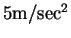

Next: About this document ...
Problem Set #1
- 1.
- A rocket ship blasts off at t-0 and accelerates upward at a rate of

.
A mile away, a news cameraman films the event
using a tripod that tilts so that he can keep the rocket in the center
of the field of view. What is the rate of change of the camera's
angle with the horizon (
 )? What are the units of
your solution? Justify your answer.
)? What are the units of
your solution? Justify your answer.
- 2.
- Suppose one wishes to characterize the terminal velocity of a
water droplet falling in the atmosphere. The relevant variables
would be the characteristic size of the droplet, the acceleration due
to gravity, the viscosity of the atmosphere (with units M L-1T-1) and the density of the liquid. How many dimensionless
combinations of the relevant quanitities are there? Find all
dimensionless products of these variables.
- 3.
- A rule of thumb for cooking turkeys is that one should allow 20
minutes of cooking time per pound of turkey in a 400o oven. Using
dimensional analysis, determine whether or not this is a good idea.
If you think it is a bad idea, propose a better one.
- 4.
- Read the Scientific American article ``How Dinosaurs Ran'' by R.
M. Alexander. Express the principle results of the first half of the
article (summarized in the graph on page 132) in terms of Buckingham's
Theorem. Suppose you did not have access to the data in this
graph, but you hypothesize that the only relevant variables for
quadrupedal animals are speed
v, stride length s, hip height l and gravity g. Use whatever
resources you can to determine the functional relationship between the
dimensionless parameters. (In other words, find animals representing
data points with different dimensionless values. Otherwise, your
graph will collapse to a point!)
Next: About this document ...
Louis F Rossi
2001-09-07